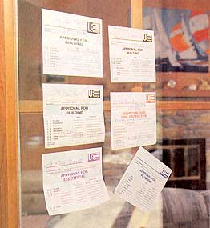

Hiring Contractors
When doing large home-construction projects, it's sometimes necessary to hire a professional builder. Here's our guide to hiring a contractor.
By Barry Chalofsky
June/July 2001
Now that some of us have reached a "comfortable age" (a polite euphemism around here for being a year or two shy of "over the hill"), we feel comfortable with home maintenance and repair - to a point.
But for larger construction projects, such as remodeling a house, even the most experienced do-it-yourselfers often need to hire a professional builder.
I am currently in the process of building a year-round sunroom in my house. I decided to hire a building contractor for the structure and separate trade contractors for the foundation, heating and electrical work. Due to the long waiting time for the local approvals, my building contractor had to take another job and I was forced to scramble for a new one. Fortunately, the foundation subcontractor also did framing. I was hesitant to hand him the increased responsibility, but he came highly recommended by close friends, lived locally and his previous work was very good. So far, I have been very pleased with his work and also with our relationship. We had some very bad weather during the construction and my basement, at one point, turned into a swimming pool due to the changes in grade and the lack of gutters. I knew I'd made the right decision in hiring this contractor when he came out on the weekend to help clean up the basement mess. He and I have also spent many hours on the phone discussing various improvements. He has been very cooperative and flexible. While I don't yet consider him a close friend, he has certainly become a critical part of my life.
When it comes to hiring a contractor, you must do your homework just as you would before any major purchase. Even a small contracting job can cause headaches and financial losses if not researched properly. I cannot guarantee perfect results, but there are steps that you can take to minimize your risk. It is possible to avoid sleepless nights, half-finished work or household disruptions by gathering information that will help you choose a contractor you can trust.
1. Research Your Project
Read magazines and books, visit home improvement stores and talk to friends who have had similar work done on their house. Check out the various materials, systems and appliances you want to buy. Then seek out a contractor.
2. Plan Your Approach
There are two types of contractors: general contractors and trade contractors. A general contractor is a project coordinator who is responsible for hiring and supervising the work performed by trade contractors. The trade contractors are specialists who work on individual aspects of the job, such as electrical or plumbing. Often, a general contractor will perform some or all of the subcontracting work himself. While you can save money by being your own general contractor, many people either don't have the time or the capacity to take on that responsibility.
3. Visit the Neighbors
The first place to start your search is with your neighbors. Not only can you examine the work firsthand, but you can also find out if the work was done on time and within budget. Ask if the contractor was responsive and courteous. Did he or she show up when promised? Were the homeowners consulted about the materials used? Was the contractor communicative and willing to listen? Did the job get completed as promised?
4. Go Local
Unless you have superlative recommendations for someone outside your area, it is best to look for a contractor who lives and works locally. Confirm his or her address, whether business or home, so that you'll have a real door to knock on should matters suddenly deteriorate. (Also, a sloppy home or business could be an indication of sloppy workmanship.) Many states and localities require that contractors be licensed, so make sure that your contractor has a valid license. You should also check with the Better Business Bureau or other local consumer organization to see whether there are any complaints on file. Be cautious of contractors who solicit door to door, only accept cash, pressure you into an immediate decision, ask you to obtain building permits or offer to arrange a loan for you.
5. Get Three Estimates
Once you assemble a plans and materials list, ask three contractors for written estimates. You shouldn't necessarily choose the one who offers the lowest price. The estimate should be balanced against your referral. If you have a glowing reference, or if you know the contractor well, you may be willing to forgo seeking other estimates.
6. Examine Past Work
Ask the contractor to give you addresses and telephone numbers for the last three customers and check out at least two. Do not, however, go with the contractor to see these customers. An untrustworthy contractor could set up a bogus site to use for referrals. Also, find out who else will be working on your project and check out their background as well.
7. Get a Written Contract
Once you have decided on a contractor, get a written contract with all terms specified. Designate the materials to be used and request that they be delivered to your house. That way, if something happens to the contractor, you still have the materials. This also enables you to confirm that materials ordered are the ones that are used on the job. All materials should be specified by style, color, quantity and catalog number if available. One option that may save you a little money and worry is to buy the materials yourself.
8. Know Who's Doing the Work
Ask whether the contractor or the contractor's employees will be performing the job, and make sure that the general contractor is responsible for their work. If there will be trade subcontractors, the contract should include their contact information and indicate what work they will do. Confirm that the contractor is responsible for getting appropriate permits and approvals, and check with the municipal construction official to determine that approvals have been obtained. Make sure that all permits are displayed on your site. Also, check out warranties on both labor and materials. Lastly, ask for proof of insurance (workers' compensation, liability and property damage) that will cover every worker on the site, including subcontractors.
Often, in the middle of the project, you may want to make changes. Discuss them with your contractor and make sure that the contract is revised to reflect the change orders. Changes may increase the cost of the project, and the contract should be modified accordingly.
9. Make Payment in Phases
Many reputable contractors will request some up-front payment to cover the cost of materials. This is acceptable as long as the materials are delivered to your house. If they are not, you may want to split the payment for the materials so that you don't pay all of it until the materials are delivered. If the charges are primarily for labor, the customary schedule is one-third up-front, one-third midway through the project and one-third upon completion. Never pay the total amount up front.
10. Supervise the Work
Make sure that the work is performed correctly and by the people identified in the contract. If the work is sloppy, or if something seems wrong, don't hesitate to question the contractor. Also, don't be embarrassed to check the work in progress. After all, you are paying for it. Remodeling a home requires a partnership that hinges on cooperation and flexibility. Talk to your contractor - if the project is large, like an addition or a kitchen, he or she may come to seem like a member of the family. The ability to communicate and the willingness to interact are critical features of a good contractor. Like any other relationship, good manners and courtesy go a long way.
11. Do a Final Inspection
When the work is completed check both the quality of the work and the condition of your property. Make sure that everything is in order and that the area is cleaned up. Do not make a final payment until the job is complete. Some states go the extra yard in protecting consumers' rights by not allowing final payment until after a final municipal inspection has been obtained. Keep copies of letters, bills and change orders. If there are any problems, attempt to resolve them with the contractor. Follow up phone conversations with a letter sent by certified mail. If you can't obtain satisfaction with the contractor, then contact your local or state consumer agency.
12. Pass On a Referral to Others
If you are satisfied with your contractor, recommend him or her to others. Let him or her know that you are doing so. This will benefit everyone - a good contractor gets rewarded, your friends and neighbors save time and worry, and you may get discounts on future work.
In contracting, as with so many things in life, if you take some time and effort to do your homework, you will save considerable work, cost and headaches.
Expert Advice
The National Association of Home Builders Remodelers Council offers information on hiring a professional remodeler. The council, founded in 1982, is made up of remodelers who have voluntarily committed to providing professional-quality construction. They offer a Certified Graduate Remodeler designation that indicates that a remodeler has met specific educational and experience requirements that demonstrates his or her competence in this field. Look for this certification when you hire a contractor. The Remodelers Council has a free booklet, "How to Find a Professional Remodeler," that you can get by sending a self-addressed, stamped envelope to:
NAHB Remodelers Council
Dept. FT
1201 15th Street, N.W.
Washington, D.C. 20005
(800) 368-5242
The Federal Trade Commission also offers a free booklet entitled "Home Sweet Home-Improvement." For a copy, write to:
Consumer Response Center Federal Trade Commission
Washington, DC 20580
(202) FTCHELP (382-4357)
E-mail: crc@ftc.gov
Website: www.ftc.gov
Click on Consumer Protection.
|
STEVE HOCKSTEIN Choose your contractor wisely and the benefits will be manifold. |
 STEVE HOCKSTEIN Check with your municipal construction official to find out what permits you will need to obtain. |
STEVE HOCKSTEIN The ability to communicate and the willingness to interact are critical features of a good contractor. |
 STEVE HOCKSTEIN Avoid unwanted surprises by keeping the lines of communication open with your contractor. |
|
|